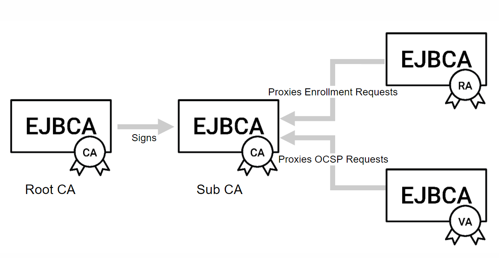
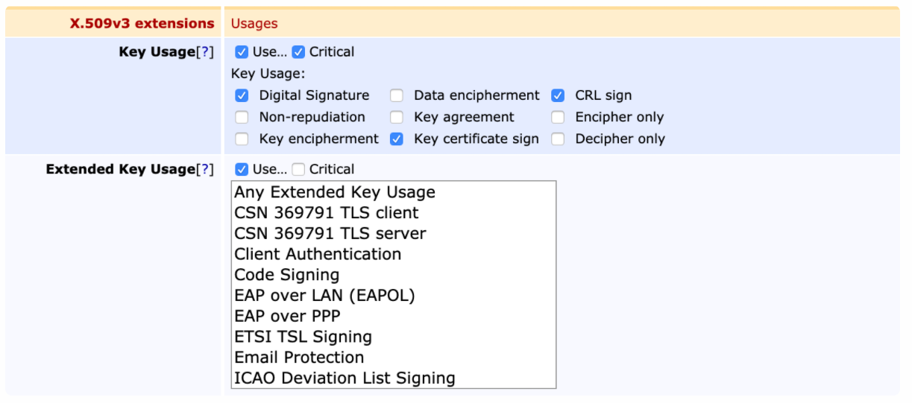
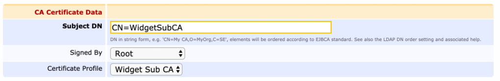
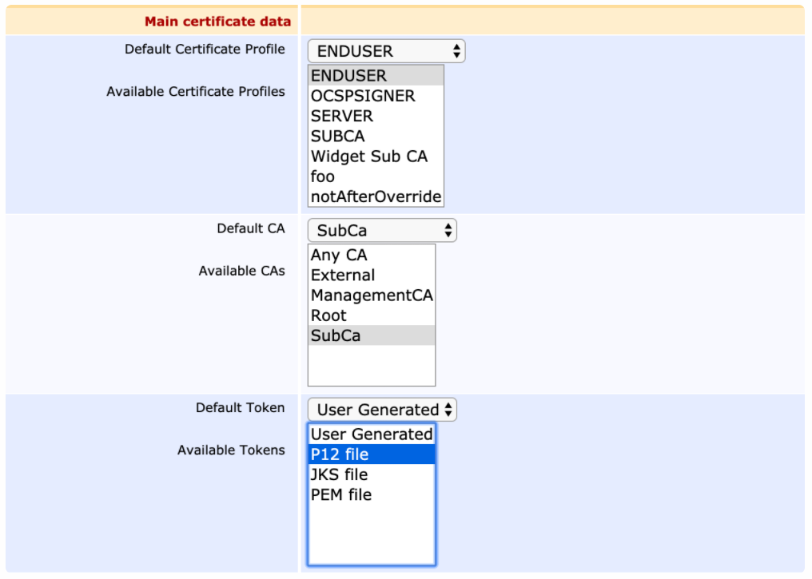
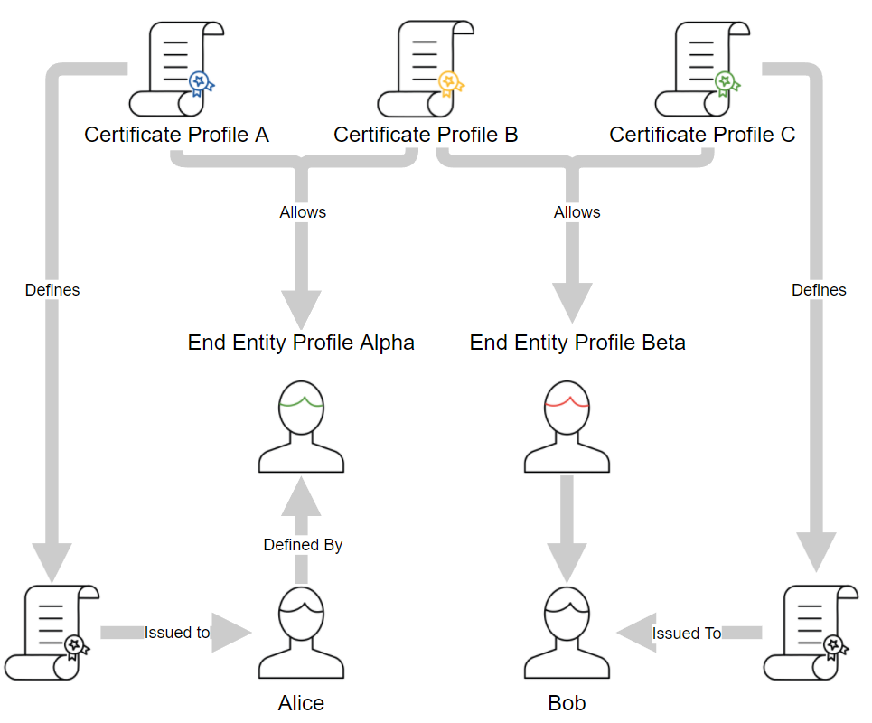

EJBCA Introduction
Introduction
EJBCA is one of the longest running CA software projects, providing time-proven robustness and reliability. EJBCA is platform independent, and can easily be scaled out to match the needs of your PKI requirements, whether you’re setting up a national eID, securing your industrial IOT platform or managing your own internal PKI.
EJBCA covers all your needs - from certificate management, registration and enrollment to certificate validation.
Certificate Lifecycle Management
EJBCA provides full capabilities for managing your certificate lifecycles, from powerful profiles that give you fine-grained and easily configured control over the identities and properties of your cryptographic certificates, automated validation of submitted keys and certification requests and multiple enrollment vectors through our own Registration Authority UI and all common enrollment protocols, to advanced administrative workflows to ensure that your organization retains control and oversight of your certificates.
EJBCA provides easy to use tools to allow administrators to easily revoke and renew certificates, ensuring that lost keys are immediately contained and that your organization suffers no downtime.
Integration and DevOps
EJBCA is built from the ground up to be easy and painless to deploy and maintain. A frequent release cycle ensures that bugs are quickly fixed and mitigated, and through clustering we allow upgrades to take place over an entire PKI with zero downtime. We have provided migration guides from several legacy PKIs, and integration guides to multiple third-party applications and guides for most Hardware Security Module vendors.
Dynamic and Scalable
EJBCA is your one-stop shop, from setting up your own self-contained PKI to setting up a complex infrastructure with 100% uptime requirements and extreme performance demands. EJBCA instances can easily be couple securely over TLS in order to secure your CA infrastructure as much as possible while providing accessibility to registration and validation nodes. By clustering nodes, high levels of reliability and performance can be achieved, achieving high degrees of availability regardless of external circumstances.
The following sections cover EJBCA concepts and architectures, and provides an overview of EJBCA’s capabilities and support:
EJBCA Concepts
EJBCA implements Public Key Infrastructure (PKI) according to standards such as X.509 and IETF-PKIX, and thus follows the general PKI concepts closely. The administration of the PKI includes some EJBCA specific concepts in order to implement unique flexibility. For definitions for general and EJBCA specific concepts and key terms, see EJBCA Concepts.
EJBCA Architecture
There are multiple ways that you can implement and architect a PKI solution, ranging from simple and low cost, to very complex and costly. EJBCA allows implementing virtually any type of PKI architecture, for information on a selection of common PKI architectures deployed, see EJBCA Architecture.
Interoperability and CertificationsLink to Interoperability and Certifications For an overview of EJBCA’s capabilities and support, with relevant links to documentation and external standards, see Interoperability and Certifications.
EJBCA concepts
The following lists definitions for general and EJBCA specific concepts and key terms. EJBCA implements the Certification Authority (CA) part of a Public Key Infrastructure (PKI) according to standards such as X.509 and IETF-PKIX. As such it follows the general PKI concepts closely. The administration of the PKI has some EJBCA specific concepts in order to implement unique flexibility.
PKI Architectures
First of all, we need to establish some general terms in order to continue.
{kind=link}
Root CA
A RootCA has a self-signed certificate and is also called Trusted Root. Verification of other certificates in the PKI ends with the RootCAs self-signed certificate. Since the RootCAs certificate is self-signed it must somehow be configured as a trusted root for all clients in the PKI.
Sub CA
A subordinate CA, or SubCA for short, is a CA whose certificate is signed by another CA, which can be another SubCA or a RootCA. Since the SubCAs certificate is signed by another CA, it does not have to be configured as a trusted root. It is part of a certificate chain that ends in the RootCA.
Registration Authority (RA)
A Registration Authority (RA) is an administrative function that registers entities in the PKI. The RA is trusted to identify and authenticate entities according to the CAs policy. There can be one or more RAs connected to each CA in the PKI.
Validation Authority (VA)
A Validation Authority (VA) is responsible for providing information on whether a certificate is currently valid or not. The VA does not issue or revoke certificates, but it validates certificates by providing a list of revoked certificates for a CA, known as a Certificate Revocation List (CRL). Another method that the VA can support is the Online Certificate Status Protocol (OCSP). It is a real-time lookup of a certificate status, compared to the CRL which is generated on a set schedule. The VA can respond to OCSP requests and reply if a certificate is good, revoked, or unknown. There can be one or more VAs connected to each CA in the PKI.
{kind=link}
{kind=link}
{kind=link}
{kind=link}
Certificate Profile
A Certificate Profile is used to configure certain content and constraints of certificates, such as certificate extensions, available algorithms, key sizes, etc. Basically, it describes what an issued certificate is going to be constrained to.
{kind=link}
The certificate extensions allow you to define if a specific extension is present and whether it is critical or not. Some extensions are populated with a value, where it is the same value for all certificates such as CRLDistributionPoint. For other extensions only the presence is determined, where the value is user- or cert-specific such as SubjectAlternativeName. Here is also determined if these certificates will be published and with which publisher.
Certificate Profiles are used in multiple places. They’re selected in the CA configuration in order to define the nature of certificates of the CA’s own keys:
{kind=link}
Likewise, several can be picked when configuring an End Entity Profile:
{kind=link}
The Certificate Profile defined for the CA will not affect the certificates issued to End Entities by that CA - these certificates will instead be defined by the Certificate Profiles chosen in the End Entity Profiles:
{kind=link}
Certificate Profiles are meant to be generically defined and shared amongst different End Entity Profiles, meaning that End Entities different enough to warrant separate End Entity Profiles can share the same Certificate Profile. In addition End Entity Profiles can also define several Certificate Profiles, allowing a single End Entity a choice between different types of certificates to have issued to it, alternatively to have several different types of certificates issued. Each certificate is defined by one and only one certificate profile.
For more information, see Certificate Profiles Overview.